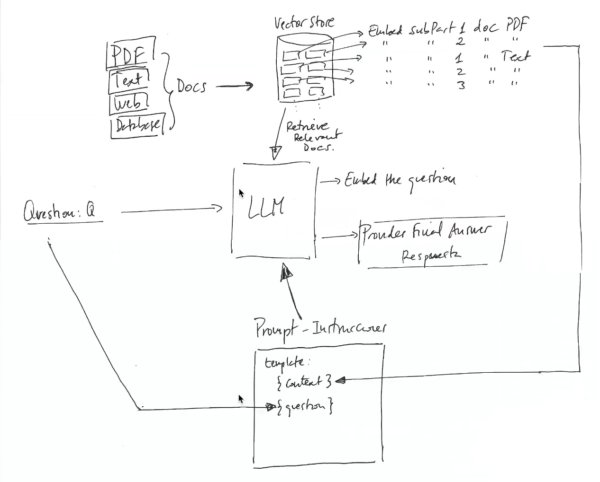
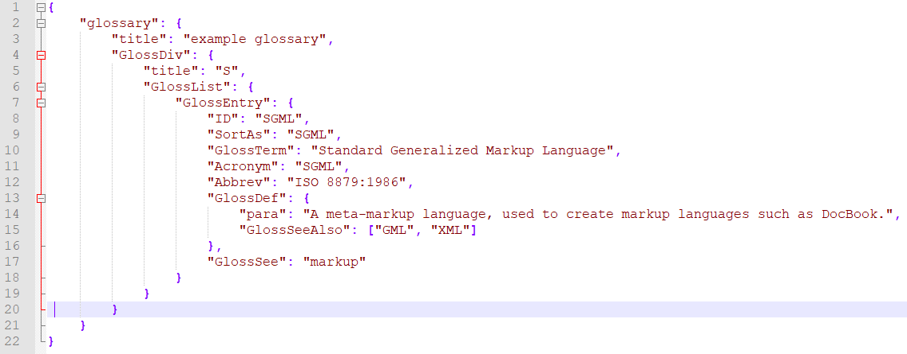
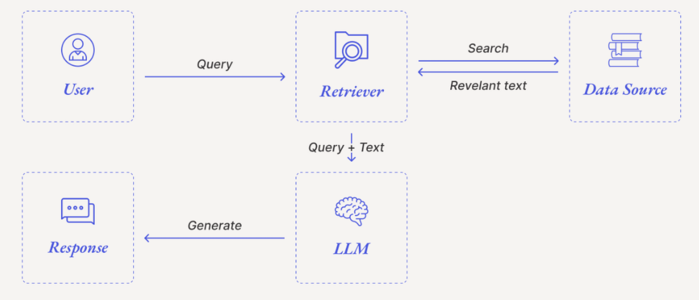

📘 Sesión 1: Introducción a Amazon Bedrock
Objetivos:
- Comprender qué es Amazon Bedrock, sus funcionalidades principales y su propósito.
- Explorar los conceptos de “modelos fundacionales” (FMs), “RAG” (generación aumentada por recuperación), “fine-tuning” y “guards / guardrails” para una IA responsable.
- Formular hipótesis sobre cómo una empresa (hotel, restaurante, ...) o centros educativos, ayuntamientos, etcétera podrían beneficiarse de la IA generativa.
- Diseñar, en equipo, una propuesta de aplicación concreta usando Amazon Bedrock adaptada a un caso real.
1. Introducción a Amazon Bedrock
Amazon Bedrock es un servicio de AWS que permite a los desarrolladores construir aplicaciones generativas utilizando modelos fundacionales (FMs) sin necesidad de gestionar infraestructura. Ofrece acceso a modelos como Claude (Anthropic), Titan (Amazon) y Stable Diffusion (Stability AI).
Capacidades destacadas
- RAG (Retrieval-Augmented Generation): podemos conectar Bedrock a nuestras propias fuentes de datos (documentos, bases de conocimiento) de modo que las respuestas del modelo estén informadas por datos reales de nuestra empresa. Esto ayuda a responder consultas concretas basadas en información actualizada. Amazon Web Services, Inc.
- Fine-tuning / personalización privada: es posible adaptar un modelo para tareas específicas o para un dominio concreto (por ejemplo, hotelería, turismo, restaurante, etc.), usando nuestros propios datos, sin que esos datos entren a formar parte del modelo base.
- Seguridad, privacidad e IA responsable: Bedrock integra funcionalidades de protección, guardrails, control de contenidos y privacidad de datos, para reducir riesgos — por ejemplo, filtrado de contenido inapropiado, protección de datos, auditoría…
- Flexibilidad de modelos: podemos elegir entre muchos FMs de distintos proveedores según el uso: algunos serán mejores para generación de texto creativa; otros para respuestas precisas; otros para integración con datos.
¿Qué es "Retrieval Augmented Generation" (RAG) o Generación Aumentada por Recuperación ?
La Retrieval Augmented Generation (RAG) o Generación Aumentada por Recuperación en español, es una técnica de IA que combina dos componentes: un sistema de recuperación de información (bases de datos vectoriales) y un LLM (modelo de lenguaje grande). El objetivo es mejorar la precisión y la actualidad de las respuestas del LLM al permitirle acceder y utilizar información de fuentes de datos externas y específicas antes de generar su respuesta, sin necesidad de reentrenamiento.
- Retrieval (Recuperación): Esta etapa consiste en indexar, recuperar los segmentos de texto creados (embeddings) que son relevantes en función de la similutd semántica.
- Augmentation (aumentar): Incrementar con información adicional los conocimientos del LLM.
- Generation: Generar o elaborar respuestas a partir de los conocimientos del LLM.
Cómo funciona
- Recuperación: Cuando se hace una consulta, un sistema de recuperación busca y selecciona los fragmentos de información más relevantes de una base de conocimiento externa (que puede incluir documentos privados, bases de datos o fuentes de noticias).
- Generación: El modelo de lenguaje grande (LLM) toma la consulta original junto con la información recuperada para generar una respuesta más precisa, actualizada y contextualizada.
- Ejemplo: Si un usuario pregunta sobre un producto específico, el sistema RAG puede buscar en la base de datos de la empresa información sobre ese producto y luego usarla para que el LLM genere una respuesta detallada y precisa.

Beneficios de RAG
- Acceso a datos actualizados: Permite a los LLM acceder a información más reciente que la que tenían durante su entrenamiento inicial.
- Reducción de alucinaciones : Disminuye la probabilidad de que el modelo "invente" información, ya que se basa en datos concretos.
- Adaptación a dominios específicos: Facilita la creación de chatbots o aplicaciones que pueden responder preguntas sobre temas muy específicos o propietarios, como el conocimiento interno de una empresa.
- Referencia de fuentes: Puede citar las fuentes de información utilizadas, lo que aumenta la transparencia y la confianza en las respuestas.
- Eficiencia: Es una forma más rápida y económica de actualizar la información de un LLM en comparación con el reentrenamiento completo del modelo.
Más información en este vídeo: https://www.youtube.com/watch?v=-NqZehslaNk
Ventajas
- Sin necesidad de entrenar modelos desde cero.
- Integración nativa con servicios AWS.
- Escalabilidad y seguridad empresarial.
Casos de uso
- Chatbots inteligentes.
- Generación de contenido.
- Resúmenes automáticos.
- Recuperación aumentada (RAG).
💡 Ejemplos Clave de Uso de Bedrock
| Área de Uso | Descripción | Modelo Fundacional Típico |
|---|---|---|
| Generación de contenido | Crear artículos, descripciones de productos o scripts automáticamente. | Amazon Titan Text, Anthropic Claude |
| Búsqueda y resumen | Crear chatbots que responden preguntas basándose en documentos internos (patrones RAG). | Amazon Titan Embeddings, Meta Llama 2 |
| Automatización de agentes | Construir agentes de IA que pueden realizar tareas complejas de varios pasos (ej. procesar reclamaciones). | Agents for Amazon Bedrock (usando modelos como Claude) |
| Generación de código | Asistencia para desarrolladores que genera fragmentos de código, traduce lenguajes o explica funciones. | Anthropic Claude Code |
Ejemplo ilustrativo
Imagina que gestinamos un hotel y queremos ofrecer a nuestros clientes un “asistente inteligente” (chatbot) que:
- Responda preguntas frecuentes: horarios, servicios, recomendaciones locales.
- Sugiera experiencias según perfil del cliente (familia, pareja, negocios, con mascotas).
- Responda en varios idiomas.
Con Amazon Bedrock podríamos:
- Crear una base de conocimiento con información propia del hotel: descripciones de servicios, normas, tarifas, actividades, recomendaciones locales.
- Usar RAG (Retrieval-Augmented Generation) para que el modelo se base en esa información interna cuando responda.
- Si queremos precisión en el estilo de las respuestas (por ejemplo, tono amable, cercano, profesional), haríamos un fine-tuning con ejemplos de interacciones típicas.
- Publicar ese asistente como chatbot web, Bot de Telegram, WhatsApp o similar sin tener que disponer de servidores propios: Bedrock lo gestiona.
2. Parámetros de Inferencia y Experimentación
Podemos experimentar con las configuraciones del prompt para controlar el comportamiento del modelo.
| Parámetro | Descripción | Impacto en el resultado |
|---|---|---|
| Temperatura | Controla la creatividad y la diversidad de las respuestas. | Un valor superior genera respuestas más creativas y diversas. |
| P Superior (Top P) | Permite seleccionar palabras más probables. | Permite variar entre respuestas más probables o menos probables. |
| Longitud Máxima (MaxTokenCount) | Define el tamaño máximo de la respuesta generada. | Limita el coste y la extensión de la respuesta. |
3. Elección estratégica del modelo
Amazon Bedrock ofrece flexibilidad para elegir el modelo que mejor se adapte a cada necesidad.
- Modelos de Amazon (Titan/Nova): Modelos propietarios que ofrecen inteligencia multimodal rápida y rentable, incluyendo generación de texto, imágenes, comprensión de documentos y código. El modelo Nova Lite es multimodal y sensible a los costes, mientras que Nova Pro es competente para tareas más complejas. Los modelos Titan Text Express son recomendados para tareas de alto volumen y bajo coste como el resumen.
- Anthropic (Claude): Modelos que destacan en razonamiento complejo, generación de código y seguimiento de instrucciones, adecuados para industrias que exigen cumplimiento y confianza.
- Stability AI: Conocidos por sus modelos de generación de imágenes, como Stable Diffusion 3.5 Large.
- DeepSeek: Modelos avanzados de razonamiento que resuelven problemas complejos paso a paso.
- Mistral AI: Modelos especializados para el razonamiento agentic y tareas multimodales.
Ejemplo básico: Generar texto con Claude
Código en Python usando boto3:
import boto3
client = boto3.client('bedrock-runtime', region_name='us-east-1')
prompt = "Resume en 3 puntos las ventajas de Amazon Bedrock"
response = client.invoke_model(
modelId="anthropic.claude-v2",
body={"input": prompt}
)
print(response['body'])
WORKSHOP
1. HELLO BEDROCK - PRIMEROS PASOS (20 minutos)
Objetivos:
- Entender la interfaz básica de Amazon Bedrock
- Realizar primeras interacciones con modelos fundacionales
- Identificar limitaciones de los modelos sin base de conocimiento
Actividades prácticas:
Configuración inicial:
- Guía paso a paso para acceder a la consola AWS
- "Vamos a seleccionar el modelo Nova Pro para nuestros primeros ejemplos"
- Explicación de la interfaz del playground de Bedrock
Ejercicio "Hello Bedrock":
Ejemplos de prompts para demostración:
- Prompt básico de presentación:
Preséntate y explica brevemente qué puedes hacer como asistente de IA. - Prompt de conocimiento general:
Explica en 5 puntos clave qué es la Inteligencia Artificial Generativa y cómo está cambiando el sector educativo. - Prompt con instrucciones específicas:
Actúa como un experto en formación profesional y crea un plan de estudios breve para un módulo de introducción a la IA. El plan debe incluir 3 unidades con sus respectivos objetivos y actividades principales. - Prompt para probar parámetros:
(Demostrar cómo cambia la respuesta modificando la temperatura)
Genera tres ideas creativas para utilizar la IA en el aula. Sé muy conciso.
Preguntas para la audiencia:
- "¿Qué diferencias notáis entre un prompt simple y uno más estructurado?"
- "¿Cómo creéis que afecta la temperatura a la creatividad de las respuestas?"
Análisis de limitaciones:
Ejemplos de prompts que muestran limitaciones:
- Conocimiento actualizado:
¿Cuáles son las últimas normativas de la Generalitat Valenciana sobre formación profesional publicadas este año? - Información específica local:
Describe el proceso actual para solicitar una beca de formación profesional en la Comunidad Valenciana, incluyendo plazos y requisitos específicos. - Datos técnicos precisos:
¿Cuál es el presupuesto exacto asignado a formación profesional por la Generalitat Valenciana para el año actual?
Discusión guiada:
- "¿Por qué creéis que el modelo no puede responder con precisión a estas preguntas?"
- "¿Qué consecuencias podría tener confiar en estas respuestas en un entorno profesional?"
- Explicación del concepto de "conocimiento limitado al entrenamiento" y "fecha de corte"
2. BASES DE CONOCIMIENTO (KB)
Objetivos:
- Comprender qué es una base de conocimiento y su importancia
- Identificar los componentes necesarios para crear una KB
- Aprender a preparar documentos para su ingesta
Knowledge Basement (KB): Una base de conocimiento es un repositorio que almacena información estructurada y permite a los modelos de IA acceder a datos específicos fuera de su entrenamiento original.
Elementos clave explicados:
- Presentación: https://aules.edu.gva.es/fp/mod/resource/view.php?id=9716490
- Fuentes de datos compatibles: "Bedrock puede procesar PDFs, documentos de texto, HTML, y otros formatos"
- Vector store y embeddings: "Los embeddings son representaciones numéricas del significado de un texto" * Analogía visual: "Imaginad una biblioteca donde cada libro está ubicado junto a otros con temas similares, no por orden alfabético"
- Chunking: "Dividimos los documentos en fragmentos manejables para el modelo"* Pregunta: "¿Por qué creéis que es necesario dividir los documentos en fragmentos más pequeños?"
- Metadatos: "Información adicional que nos ayuda a filtrar y organizar el conocimiento"
Actividad práctica:
Preparación de documentos:
- Análisis de documentos de muestra:
- Mostrar ejemplos de documentos administrativos de la Generalitat
- "Vamos a analizar este documento sobre procedimientos de contratación pública"
- Mejores prácticas para estructurar información:
- "Los documentos bien estructurados mejoran la precisión de las respuestas"
- Ejemplos de buena versus mala estructuración

- Importancia de los títulos, subtítulos y formato consistente
Datos/información estructurada
La información estructurada es aquella que sigue un esquema fijo (tablas, campos, tipos bien definidos) y se puede consultar con lenguajes como SQL o JSON. Ejemplos típicos serían tablas de una base de datos relacional con columnas como “id_cliente”, “fecha”, “importe”, o un data warehouse en Redshift con registros de ventas, inventario o métricas numéricas.
En Bedrock, las bases de conocimiento ya permiten lanzar consultas en lenguaje natural que se traducen automáticamente a consultas SQL sobre estos orígenes de datos estructurados, de forma que un usuario puede preguntar “ventas del último trimestre por región” sin escribir SQL. En JSON, esto se traduce en documentos con una estructura homogénea, por ejemplo, registros de clientes, pedidos o logs con claves bien definidas como id, fecha, importe, producto, etc.
En resumen, Bedrock puede convertir preguntas en consultas estructuradas (p. ej. SQL) y devolver respuestas precisas sobre esos registros.
Datos/información no estructurada
La información no estructurada no encaja en tablas de filas y columnas, porque no sigue un formato fijo ni un modelo predefinido. Aquí entran documentos largos (PDF, Word), correos, presentaciones, páginas web, contenido multimedia (audio, vídeo, imágenes) o mensajes en redes sociales, que suelen almacenarse en sistemas de ficheros, S3, gestores de contenidos, Confluence, SharePoint, etc.
Las bases de conocimiento de Bedrock se conectan a este tipo de orígenes (por ejemplo, S3, Confluence, Salesforce o SharePoint) y aplican técnicas como RAG: indexan el contenido, lo vectorizan y luego recuperan los fragmentos relevantes para enriquecer las respuestas de los modelos generativos con ese contexto específico.
- Consideraciones lingüísticas:
- "Nuestra KB debe manejar documentos en castellano y valenciano"
- Pregunta: "¿Qué desafíos creéis que plantea trabajar con documentos bilingües?"
Creación de una KB básica:
- Demostración paso a paso:
- Creación de un data source
- Configuración del vector store
- Selección de opciones de chunking (tamaño, solapamiento)
- Proceso de ingesta con ejemplos visuales
- Verificación:
- "Así podemos comprobar que nuestra KB se ha creado correctamente"
- Demostración de búsqueda básica para verificar la ingesta
3. RAG BEDROCK: TEORÍA Y PRÁCTICA
Objetivos:
- Entender el flujo RAG (Retrieval Augmented Generation)
- Visualizar el proceso de razonamiento del modelo
- Comprender la memoria conversacional
Contenido teórico:
Arquitectura RAG explicada:
- Diagrama visual del flujo RAG

- "RAG es como tener una biblioteca y un escritor trabajando juntos"
Explicación paso a paso:
- Recepción de la pregunta: "El usuario pregunta sobre un trámite específico"
- Generación de embeddings: "Convertimos la pregunta a su representación vectorial"
- Búsqueda vectorial: "Buscamos fragmentos similares en nuestra KB"
- Ranking: "Ordenamos los resultados por relevancia"
- Inyección en contexto: "Proporcionamos al modelo la información recuperada"
- Generación: "El modelo formula una respuesta basada en la información proporcionada"
Pregunta para la audiencia:
- "¿En qué se diferencia este enfoque de simplemente entrenar un modelo con toda la documentación?"
Memoria conversacional:
- "La memoria permite mantener el contexto de una conversación"
- Ejemplos de conversaciones con y sin memoria
Actividad práctica:
Implementación de RAG:
- Configuración del flujo RAG:
- Conexión de la KB creada con el modelo seleccionado
- Configuración de parámetros de búsqueda (número de resultados, umbral de similitud)
- Ejemplos de prompts para RAG:
- Prompt básico para consulta:
¿Cuál es el procedimiento para solicitar una licencia de apertura de negocio según la normativa actual? - Prompt con seguimiento (memoria conversacional):
¿Qué documentación necesito presentar para ese trámite? -
Prompt con instrucciones específicas:
Visualización del proceso:Explica paso a paso el proceso de solicitud de subvenciones para empresas. Estructura tu respuesta en forma de lista numerada y destaca los plazos importantes. -
Mostrar los fragmentos recuperados
- Explicar cómo se construye el prompt aumentado
- Analizar la respuesta generada
Experimentación:
- Comparativa:
- "Vamos a hacer la misma pregunta con y sin KB para ver la diferencia"
- Análisis de precisión, detalle y fuentes citadas
-
Ajuste de parámetros:
- Modificar número de resultados recuperados
- Cambiar temperatura del modelo
- Pregunta: "¿Qué cambios observáis al modificar estos parámetros?"
-
Crear un agente y realizar pruebas.
- Instrucciones:
Eres un asistente educado y cortés el cual vas a ayudar tanto a alumnos como profesores. Puedes hablar español, valenciano e inglés. Solo puedes hablar del contenido de tu base de conocimientos (knowledge basement). - Prompts de ejemplo:
Dime las leyes que se mencionan el documento 6868
- Instrucciones:
4. CASO PRÁCTICO: DOCUMENTACIÓN ADMINISTRATIVA
Objetivos:
- Aplicar lo aprendido a un caso real
- Construir un asistente para documentación administrativa
Actividad:
- Presentación del escenario:
- "Vamos a crear un asistente virtual que ayude a ciudadanos y funcionarios a navegar por los procedimientos administrativos de la Generalitat"
- Implementación paso a paso:
- Selección de documentos:
- Documentos de procedimientos administrativos
- Formularios oficiales
- FAQs existentes
- Creación de la KB especializada:
- Demostración de la ingesta de estos documentos
- Configuración específica para documentación administrativa
- Diseño de prompts efectivos:
Ejemplo de prompt/sistema para el asistente:
Eres un asistente especializado en procedimientos administrativos de la Generalitat Valenciana.
Tu objetivo es proporcionar información precisa y actualizada sobre trámites, requisitos y plazos.
Debes:
1. Responder con claridad y precisión
2. Citar la normativa o documento específico de donde extraes la información
3. Indicar claramente cuando no tengas información suficiente
4. Estructurar las respuestas complejas en pasos numerados
5. Ser respetuoso y profesional en todo momento
¿Cuáles son los requisitos para solicitar una ayuda al alquiler?
Necesito saber el procedimiento para presentar una reclamación por una multa de tráfico.
¿Cuáles son los plazos para la presentación del impuesto de sucesiones?
- Pruebas con escenarios reales:
- Invitar a los participantes a formular preguntas
- Analizar la calidad y precisión de las respuestas
- Pregunta: "¿Qué mejoras podríamos implementar en este asistente?"
5. Aprendizaje basado en retos
✅ Reto 1
Crear un prompt que genere un plan de marketing para un producto tecnológico.
✅ Reto 2
Implementar un flujo con Bedrock Agents para responder preguntas sobre documentos internos.
✅ Reto 3
Conectar Bedrock con Amazon S3 para usar datos propios en la generación de respuestas.
6. Proyecto integrador real
Caso
Automatizar resúmenes de informes técnicos en una empresa manufacturera.
Arquitectura
- AWS Lambda + API Gateway + Amazon Bedrock.
Flujo
- Técnico sube informe a S3.
- Lambda invoca Bedrock para generar resumen.
- API Gateway expone endpoint para consultar resumen.
Código Lambda (Python)
import json
import boto3
def lambda_handler(event, context):
client = boto3.client('bedrock-runtime')
report_text = event['body']
response = client.invoke_model(
modelId="anthropic.claude-v2",
body={"input": f"Resume el siguiente informe técnico: {report_text}"}
)
return {
'statusCode': 200,
'body': json.dumps({'summary': response['body']})
}
Resultado esperado
- Endpoint
/summarizedevuelve resumen en segundos. - Beneficio: reduce tiempo de análisis en un 70%.